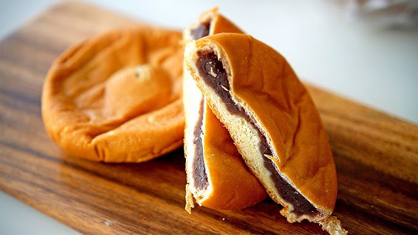

단팥빵은 20세기 초 일본에서 시작되어 한국에도 전해졌습니다. 이후 한국인의 입맛에 맞게 달콤한 팥소로 변형되어 사랑받게 되었습니다.
요즘에는 크림 단팥빵, 찰떡 단팥빵, 고구마 단팥빵 등 다양한 버전이 등장하고 있어요!
빵이 일본에 전래된 것은 꽤 오래되었으나, 유럽에서 주로 식사용으로 먹는 빵은 밀가루에 소금과 효모만 넣고 굽는 것이라 쌀로 지은 밥을 주로 먹는 일본인들에게는 잘 맞지 않았다고 한다.
기록에 의하면 팥빵은 키무라 야스베(木村安兵衛)라는 사람이 처음 만들었다고 하는데, 원래 제빵을 업으로 삼은 인물은 아니었고 하급 무사였다가 메이지 유신 이후 일종의 직업교육센터였던 직업수산소의 사무원으로 전직한 그럭저럭 평범한 케이스였다.
하지만 수산소 근무 중 네덜란드 유학생이자 네덜란드인들의 전속 요리사로 일했던 우메키치(梅吉)라는 사람을 만나 빵 제조법에 대한 상세한 정보를 듣게 되었고, 당시로서는 생소한 제빵업에 관심을 갖게 되었다. 결국 키무라는 수산소를 그만둔 뒤, 당시 기준으로 적지 않은 나이였던 52세(1869년) 때 도쿄 신바시역 근처에 아내와 아들 이름에 있는 한자 2개를 따와 분에이도(文英堂)라는 빵집을 차렸다.
하지만 분에이도는 1년도 채 못가 화재로 전소되었고, 2번째로 긴자에 자리를 얻어 만든 빵집인 '키무라야(木村屋)' 도 1873년에 똑같이 잿더미가 되고 말았다. 이렇게 2번이나 화재로 가게를 날려먹는 큰 타격을 받았음에도 키무라는 그 동안 벌어들인 수익금에 은행에서 빌린 돈까지 더해 화재 위험이 적은 신식 벽돌 건물을 만들어 3번째로 빵집을 재건할 수 있었다.
가게를 신식으로 다시 짓는 동안 키무라는 아들인 에이사부로(木村英三郎)와 함께 일본인들이 전통적인 간식 재료로 많이 사용하는 단팥 앙금을 빵반죽에 싸서 굽는 시도를 여러 차례 했다. 하지만 딱딱한 유럽식 빵 제조법을 무리하게 대입했다가 실패한 적도 많았고, 부드럽게 빵을 부풀리기 위해 양조용 효모를 대신 쓰는 등의 다양한 방식을 접목했지만 실패를 반복했다.
그래도 키무라 부자는 미친듯한 근성을 발휘했고, 결국 1874년에 충분히 부드러우면서 단팥 앙금 맛도 살린 첫 단팥빵을 구워내 팔기 시작했다. 딱딱하고 밍밍한 유럽식 빵에 진력이 난 일본인들은 새로운 형태의 퓨전 간식에 열광했고, 이듬해 4월에는 무사 시절 친구이자 메이지 덴노의 측근이었던 야마오카 테슈(山岡鉄舟)[2]의 도움을 받아 일본 황실의 식탁에까지 올리게 됐다. 이때 황실에 진상한 단팥빵은 에이사부로가 가운데에 벚꽃잎을 소금에 절여 박아넣고 구운 특상품이었다고 하며, 메이지 덴노는 빵을 먹고는 맛이 매우 괜찮았는지 즉석에서 시까지 지어 읊었다고 한다. 몇 년 뒤 일반 고객들에게도 보통 단팥빵보다 약간 더 비싼 가격으로 시판했고, 지금도 키무라야의 간판 상품이다.
이렇게 단팥빵을 대히트시킨 키무라야는 1900년에 에이사부로에 이어 3대째 가업을 이어받은 기시로(木村儀四郎)가 단팥소 대신 잼을 넣은 잼빵을 신상품으로 내놓는 등 일본 과자빵 업계의 선두 주자 자리를 오랫동안 지켰다. 키무라야는 체인점 형태로까지 판로를 넓혔고, 특히 키무라 부자가 긴자에 처음 연 가게는 키무라야 총본점이라는 이름으로 지금도 영업하고 있다. 단팥빵 매니아들의 공식 성지.
단팥빵은 일본의 관군이 처음으로 도입한 근대적인 의미의 전투식량으로서, 일본의 내전에 활용되면서 진가를 발휘하였다. 다음 내용은 내 전 중 단팥빵이 어떻게 활용되었는지를 알려 주는 글이다.
출처: Google
